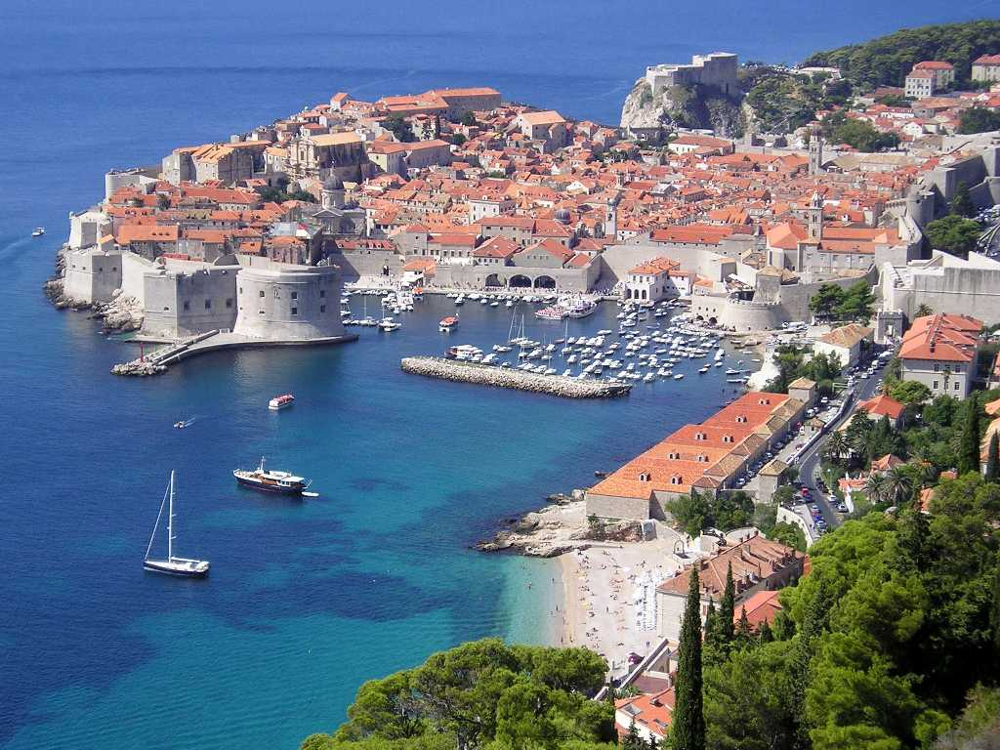
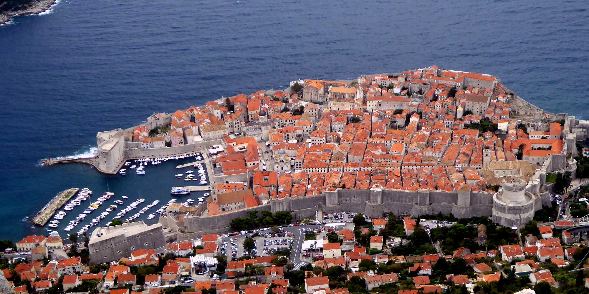
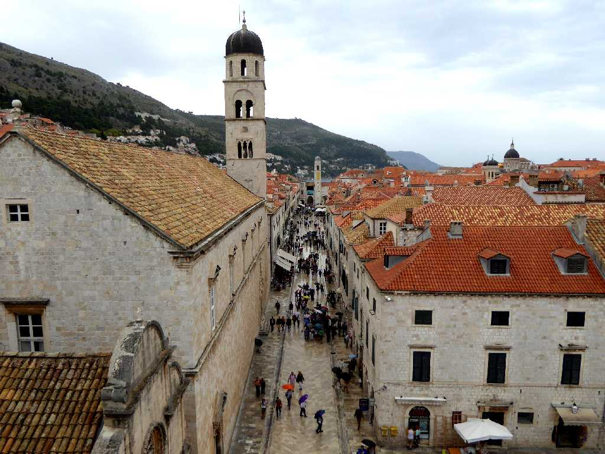
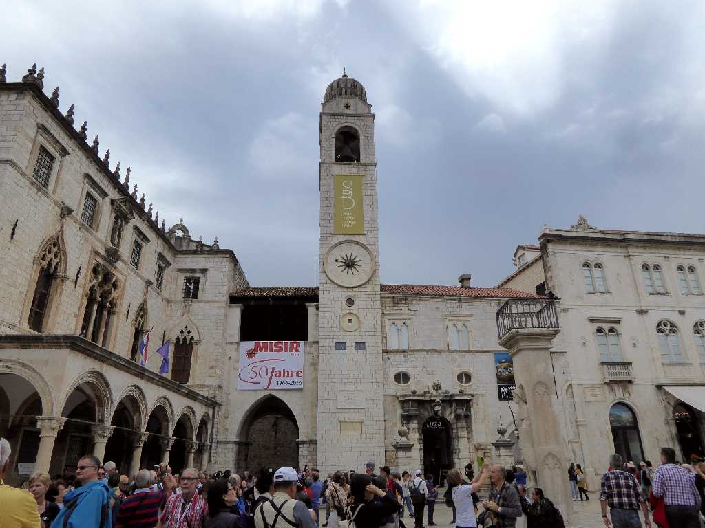
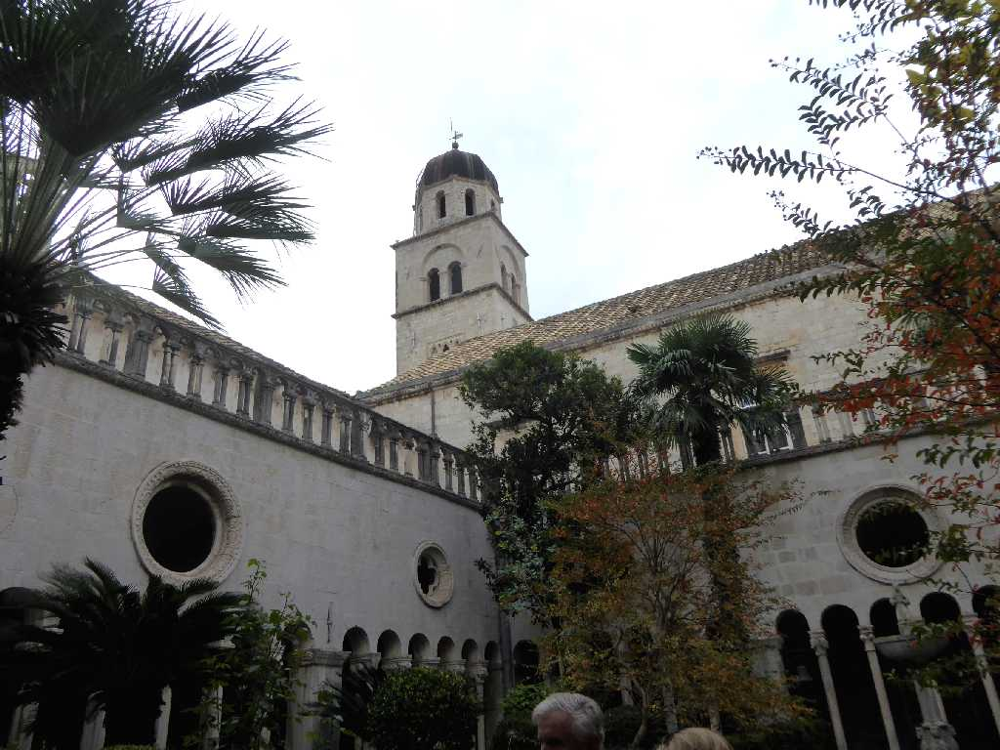
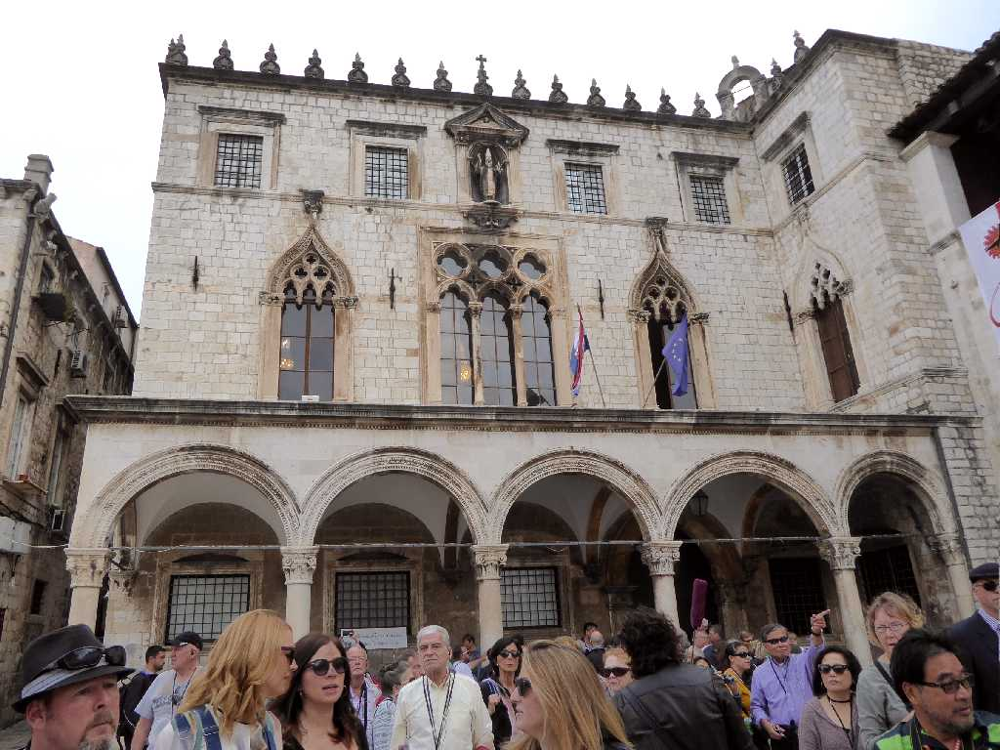
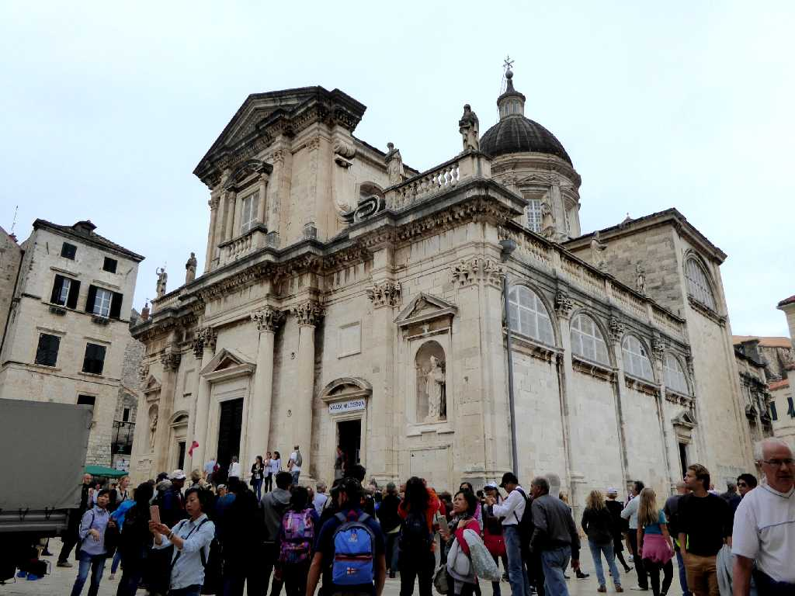
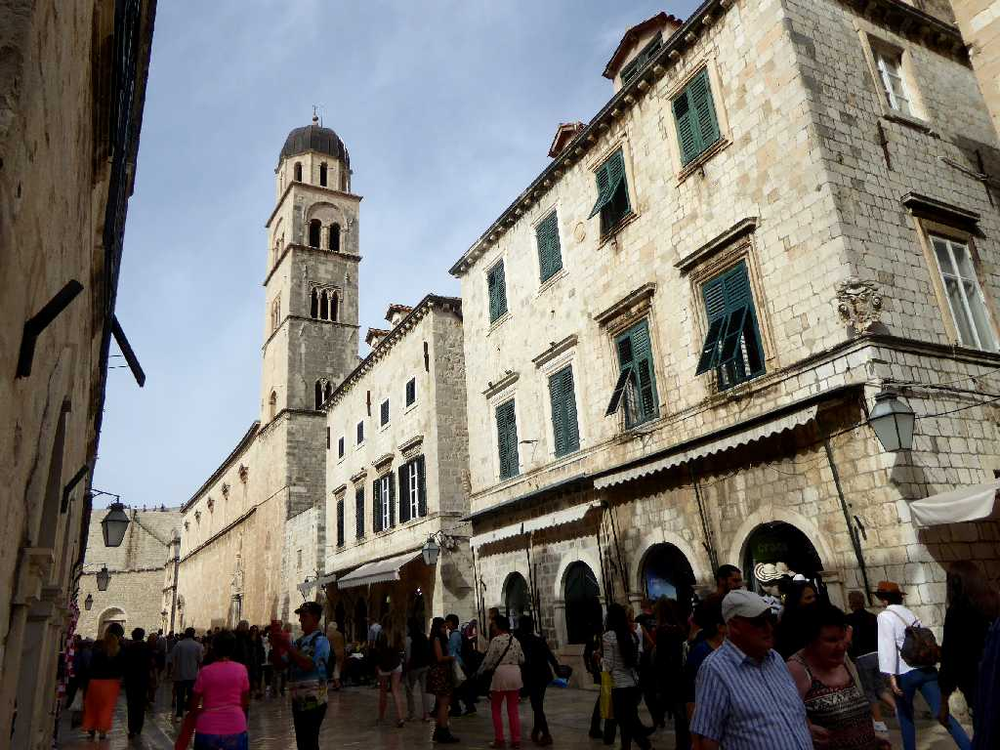
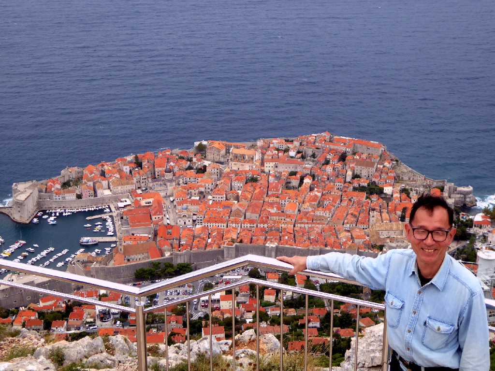
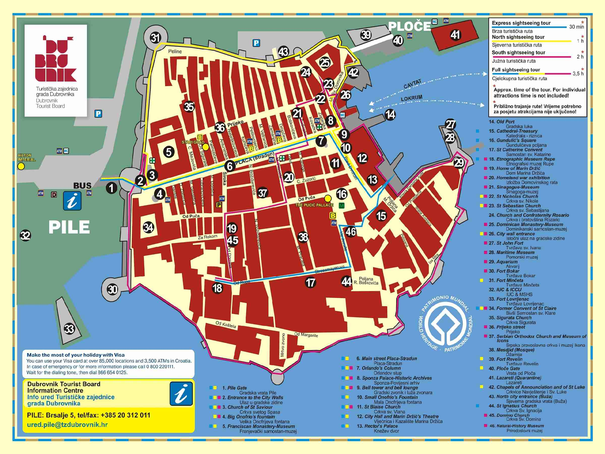

August 1989 Dubrovnik
アドリア海の真珠といわれる自由都市国家で８世紀から高さ２３ｍの城壁が創られ始め１９０６年ナポレオン軍に侵攻されるまで栄えた 「いかなる黄金をもってしても自由を売り渡してはならない」と城壁に刻まれている アドリア海で海水浴を楽しみ石造りの城に折りたたみ椅子を並べオペラを鑑賞するなど２泊３日のんびり過ごした

Dubrovnik
ユーゴスラビアの内戦により分かれたクロアチアのドブロヴニクに約３０年ぶりの再訪問

Main Street Stradun Dubrovnik
旧市街のピレ門から３００ｍ続く中央通り

Bell Tower
１４４４年に創られ１９２９年に再建された旧市街の中心にある高さ３１ｍの時計塔

Dominikanski samostan
１２２５年に設立されたドミニコ会の修道院で１４世紀頃創られた

Sponza Palace
１５２０年頃創られたスポンザ宮殿

Cathedral
６世紀頃創建され１８世紀頃にバロック様式で創られたドブロブニク大聖堂

Franjevački samostan
１５世紀に創られたフランシスコ教会と修道院

October 15 2016 Dubrovnik
